Reference Guide¶
Retrieve Data¶
Download and read data from the R-series Geostationary Operational Environmental Satellite data.
Data is downloaded from Amazon Web Services and can be returned as a file list or read as an xarray.Dataset. If the data is not available in a local directory, it is loaded directly into memory.
https://registry.opendata.aws/noaa-goes/
Functions:
|
Get the latest available GOES data. |
|
Get the latest available GOES data. |
|
Get GOES data for a time range. |
- goes2go.data.goes_latest(*, satellite='noaa-goes16', product='ABI-L2-MCMIP', domain='C', return_as='xarray', download=True, overwrite=False, save_dir=PosixPath('/p/cwfs/blaylock/data'), s3_refresh=True, verbose=True)¶
Get the latest available GOES data.
- Parameters
satellite ({'goes16', 'goes17'}) –
Specify which GOES satellite. The following alias may also be used:
'goes16': 16, ‘G16’, or ‘EAST’'goes17': 17, ‘G17’, or ‘WEST’
product ({'ABI', 'GLM', other GOES product}) –
Specify the product name.
’ABI’ is an alias for ABI-L2-MCMIP Multichannel Cloud and Moisture Imagery
’GLM’ is an alias for GLM-L2-LCFA Geostationary Lightning Mapper
Others may include
'ABI-L1b-Rad','ABI-L2-DMW', etc. For more available products, look at this READMEdomain ({'C', 'F', 'M'}) –
ABI scan region indicator. Only required for ABI products if the given product does not end with C, F, or M.
C: Contiguous United States (alias ‘CONUS’)
F: Full Disk (alias ‘FULL’)
M: Mesoscale (alias ‘MESOSCALE’)
return_as ({'xarray', 'filelist'}) – Return the data as an xarray.Dataset or as a list of files
download (bool) –
True: Download the data to disk to the location set by save_dir
False: Just load the data into memory.
save_dir (pathlib.Path or str) – Path to save the data.
overwrite (bool) –
True: Download the file even if it exists.
False Do not download the file if it already exists
s3_refresh (bool) – Refresh the s3fs.S3FileSystem object when files are listed.
- goes2go.data.goes_nearesttime(attime, within=Timedelta('0 days 01:00:00'), *, satellite='noaa-goes16', product='ABI-L2-MCMIP', domain='C', return_as='xarray', download=True, overwrite=False, save_dir=PosixPath('/p/cwfs/blaylock/data'), s3_refresh=True, verbose=True)¶
Get the latest available GOES data.
- Parameters
attime (datetime) – Time to find the nearest observation for. May also use a pandas-interpretable datetime string.
within (timedelta or pandas-parsable timedelta str) – Timerange tht the nearest observation must be.
satellite ({'goes16', 'goes17'}) –
Specify which GOES satellite. The following alias may also be used:
'goes16': 16, ‘G16’, or ‘EAST’'goes17': 17, ‘G17’, or ‘WEST’
product ({'ABI', 'GLM', other GOES product}) –
Specify the product name.
’ABI’ is an alias for ABI-L2-MCMIP Multichannel Cloud and Moisture Imagery
’GLM’ is an alias for GLM-L2-LCFA Geostationary Lightning Mapper
Others may include
'ABI-L1b-Rad','ABI-L2-DMW', etc. For more available products, look at this READMEdomain ({'C', 'F', 'M'}) –
ABI scan region indicator. Only required for ABI products if the given product does not end with C, F, or M.
C: Contiguous United States (alias ‘CONUS’)
F: Full Disk (alias ‘FULL’)
M: Mesoscale (alias ‘MESOSCALE’)
return_as ({'xarray', 'filelist'}) – Return the data as an xarray.Dataset or as a list of files
download (bool) –
True: Download the data to disk to the location set by save_dir
False: Just load the data into memory.
save_dir (pathlib.Path or str) – Path to save the data.
overwrite (bool) –
True: Download the file even if it exists.
False: Do not download the file if it already exists
s3_refresh (bool) – Refresh the s3fs.S3FileSystem object when files are listed.
- goes2go.data.goes_timerange(start=None, end=None, recent=None, *, satellite='noaa-goes16', product='ABI-L2-MCMIP', domain='C', return_as='filelist', download=True, overwrite=False, save_dir=PosixPath('/p/cwfs/blaylock/data'), max_cpus=1, s3_refresh=False, verbose=True)¶
Get GOES data for a time range.
- Parameters
start (datetime) – Required if recent is None.
end (datetime) – Required if recent is None.
recent (timedelta or pandas-parsable timedelta str) – Required if start and end are None. If timedelta(hours=1), will get the most recent files for the past hour.
satellite ({'goes16', 'goes17'}) –
Specify which GOES satellite. The following alias may also be used:
'goes16': 16, ‘G16’, or ‘EAST’'goes17': 17, ‘G17’, or ‘WEST’
product ({'ABI', 'GLM', other GOES product}) –
Specify the product name.
’ABI’ is an alias for ABI-L2-MCMIP Multichannel Cloud and Moisture Imagery
’GLM’ is an alias for GLM-L2-LCFA Geostationary Lightning Mapper
Others may include
'ABI-L1b-Rad','ABI-L2-DMW', etc. For more available products, look at this READMEdomain ({'C', 'F', 'M'}) –
ABI scan region indicator. Only required for ABI products if the given product does not end with C, F, or M.
C: Contiguous United States (alias ‘CONUS’)
F: Full Disk (alias ‘FULL’)
M: Mesoscale (alias ‘MESOSCALE’)
return_as ({'xarray', 'filelist'}) – Return the data as an xarray.Dataset or as a list of files
download (bool) –
True: Download the data to disk to the location set by save_dir
False: Just load the data into memory.
save_dir (pathlib.Path or str) – Path to save the data.
overwrite (bool) –
True: Download the file even if it exists.
False Do not download the file if it already exists
max_cpus (int) –
s3_refresh (bool) – Refresh the s3fs.S3FileSystem object when files are listed.
Custom Accessors¶
Field of View¶
Create polygon objects of the GOES field of view for the ABI and GLM instrument.
Access with the FOV accessor.
# G is an xarray.Dataset of GOES data.
G.FOV.domain # only ABI datasets
G.FOV.full_disk # ABI or GLM datasets
- class goes2go.accessors.fieldOfViewAccessor(xarray_obj)¶
Create a field-of-view polygon for the GOES data.
Based on information from the GOES-R Series Data Book.
GLM lense field of view is 16 degree, or +/- 8 degrees (see page 225) ABI full-disk field of view if 17.4 degrees (see page 48)
Attributes:
Cartopy coordinate reference system for the Satellite.
Field of view for the ABI domain (CONUS or MesoScale).
Full-disk field of view for the ABI or GLM instruments.
- property crs¶
Cartopy coordinate reference system for the Satellite.
- property domain¶
Field of view for the ABI domain (CONUS or MesoScale).


- Returns
- Return type
shapely.Polygon
- property full_disk¶
Full-disk field of view for the ABI or GLM instruments.
 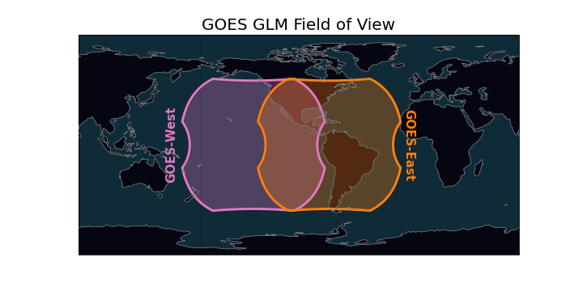
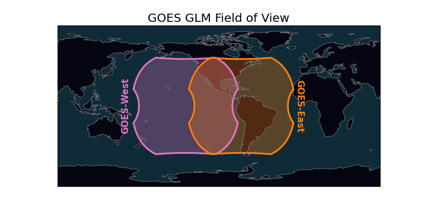
- Returns
- Return type
shapely.Polygon
RGB Recipes¶
RGB recipes for ABI multichannel cloud moisture imagery files.
Access with the rgb accessor. The RGB method will return a DataArray of the
RGB values and also attaches the RGB DataArray to the existing GOES Dataset.
# G is an xarray.Dataset of GOES data.
G.rgb.TrueColor()
G.rgb.NaturalColor()
... etc.
# Also can get the Cartopy coordinate reference system
G.rgb.crs
To make a simple RGB plot:
from goes2go.data import goes_latest
import matplotlib.pyplot as plt
G = goes_latest()
plt.imshow(G.rgb.TrueColor())
- class goes2go.accessors.rgbAccessor(xarray_obj)¶
Methods:
AirMass()Air Mass RGB: (See Quick Guide for reference)
Ash()Ash RGB: (See Quick Guide for reference)
Day Cloud Convection RGB: (See Quick Guide for reference)
Day Cloud Phase Distinction RGB: (See Quick Guide for reference)
Day Convection RGB: (See Quick Guide for reference)
Day Land Cloud Fire RGB: (See Quick Guide for reference)
Day Land Cloud Fire RGB: (See Quick Guide for reference)
Day Snow-Fog RGB: (See Quick Guide for reference)
Differential Water Vapor RGB: (See Quick Guide for reference)
Dust()SulfurDioxide RGB: (See Quick Guide for reference)
Fire Temperature RGB: (See Quick Guide for reference)
NaturalColor([gamma, pseudoGreen, night_IR])Natural Color RGB based on CIMSS method.
Night Fog Difference RGB (greyscale): (See Quick Guide for reference)
Nighttime Microphysics RGB: (See Quick Guide for reference)
Normalized Burn Ratio
RocketPlume([night])Rocket Plume RGB
Split Window Difference RGB (greyscale): (See Quick Guide for reference)
SulfurDioxide RGB: (See Quick Guide for reference)
TrueColor([gamma, pseudoGreen, night_IR])True Color RGB: (See Quick Guide for reference)
Simple Water Vapor RGB: (See Quick Guide for reference)
Get lat/lon of all points
Attributes:
x sweep in crs units (m); x * sat_height
x sweep in crs units (m); x * sat_height
- AirMass()¶
Air Mass RGB: (See Quick Guide for reference)
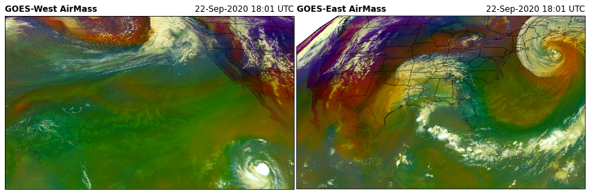
- Ash()¶
Ash RGB: (See Quick Guide for reference)
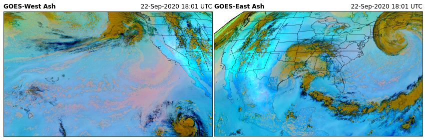
- DayCloudConvection()¶
Day Cloud Convection RGB: (See Quick Guide for reference)
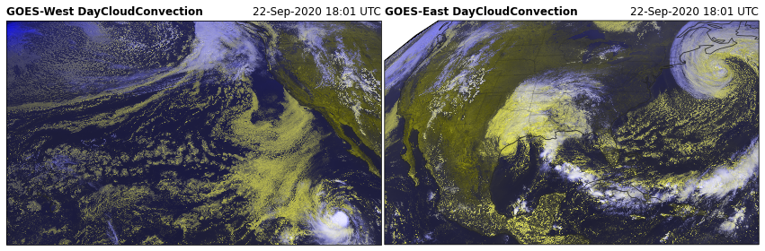
- DayCloudPhase()¶
Day Cloud Phase Distinction RGB: (See Quick Guide for reference)
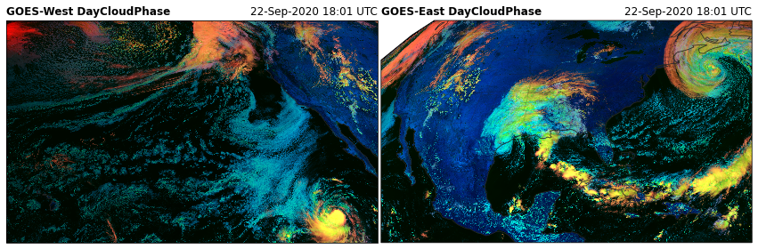
- DayConvection()¶
Day Convection RGB: (See Quick Guide for reference)
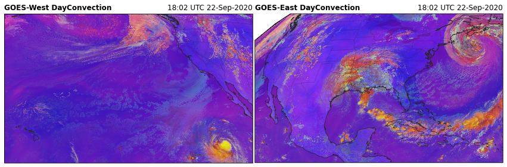
- DayLandCloud()¶
Day Land Cloud Fire RGB: (See Quick Guide for reference)
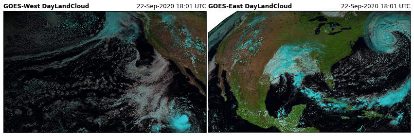
- DayLandCloudFire()¶
Day Land Cloud Fire RGB: (See Quick Guide for reference)
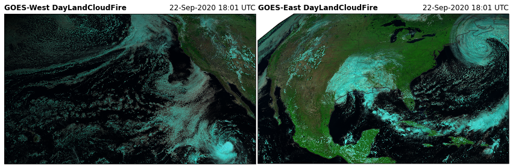
- DaySnowFog()¶
Day Snow-Fog RGB: (See Quick Guide for reference)

- DifferentialWaterVapor()¶
Differential Water Vapor RGB: (See Quick Guide for reference)
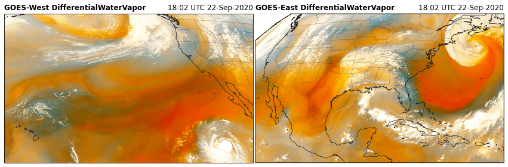
- Dust()¶
SulfurDioxide RGB: (See Quick Guide for reference)
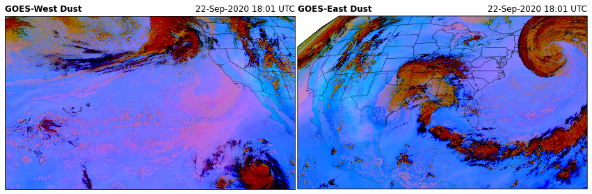
- FireTemperature()¶
Fire Temperature RGB: (See Quick Guide for reference)
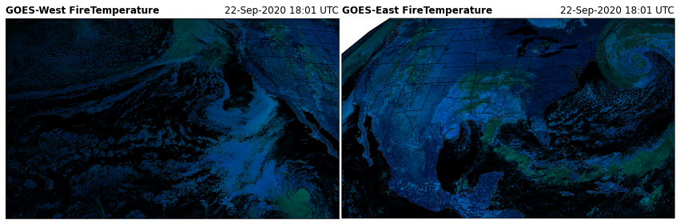
- NaturalColor(gamma=0.8, pseudoGreen=True, night_IR=False)¶
Natural Color RGB based on CIMSS method. Thanks Rick Kohrs! (See Quick Guide for reference)
Check out Rick Kohrs merged GOES images.
This NaturalColor RGB is very similar to the TrueColor RGB but uses slightly different contrast stretches and ranges.
For more details on combing RGB and making the psedo green channel, refer to Bah et al. 2018.
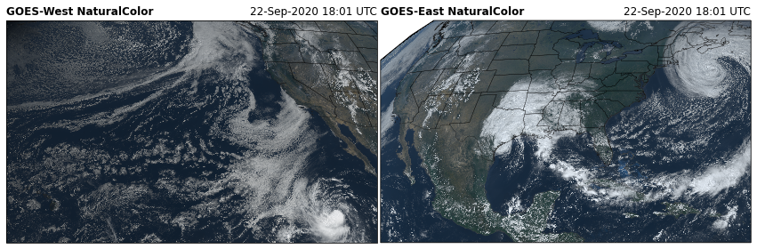


- Parameters
gamma (float) – Darken or lighten an image with gamma correction. Values > 1 will lighten an image. Values < 1 will darken an image.
night_IR (bool) – If True, use Clean IR (channel 13) as maximum RGB value overlay so that cold clouds show up at night. (Be aware that some daytime clouds might appear brighter).
- NightFogDifference()¶
Night Fog Difference RGB (greyscale): (See Quick Guide for reference)
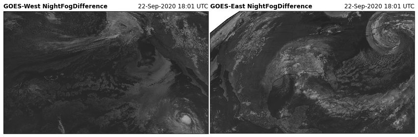
- NighttimeMicrophysics()¶
Nighttime Microphysics RGB: (See Quick Guide for reference)
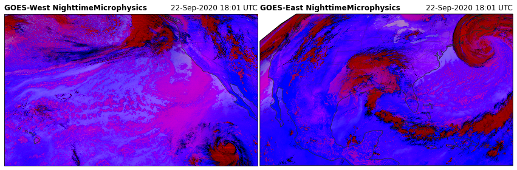
- NormalizedBurnRatio()¶
Normalized Burn Ratio
THIS FUNCTION IS NOT FULLY DEVELOPED. Need more info.
NBR= (0.86 µm – 2.2 µm)/(0.86 um + 2.2 um)
- RocketPlume(night=False)¶
Rocket Plume RGB
For identifying rocket launches.
See this blog and the Quick Guide for reference

- Parameters
night (bool) – If the area is in night, turn this on to use a different channel than the daytime application.
- SplitWindowDifference()¶
Split Window Difference RGB (greyscale): (See Quick Guide for reference)
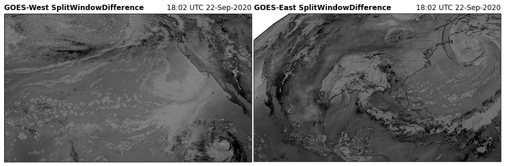
- SulfurDioxide()¶
SulfurDioxide RGB: (See Quick Guide for reference)

- TrueColor(gamma=2.2, pseudoGreen=True, night_IR=True)¶
True Color RGB: (See Quick Guide for reference)
This is similar to the NaturalColor RGB, but uses a different gamma correction and does not apply contrast stretching. I think these images look a little “washed out” when compared to the NaturalColor RGB. So, I would recommend using the NaturalColor RGB.
For more details on combing RGB and making the psedo green channel, refer to Bah et al. 2018.
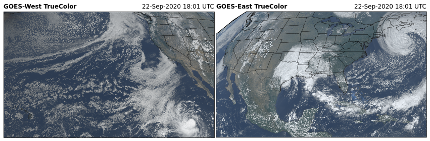
- Parameters
gamma (float) –
Darken or lighten an image with gamma correction. Values > 1 will lighten an image. Values < 1 will darken an image.
pseudoGreen (bool) – True: returns the calculated “True” green color False: returns the “veggie” channel
night_IR (bool) – If True, use Clean IR (channel 13) as maximum RGB value overlay so that cold clouds show up at night. (Be aware that some daytime clouds might appear brighter).
- WaterVapor()¶
Simple Water Vapor RGB: (See Quick Guide for reference)
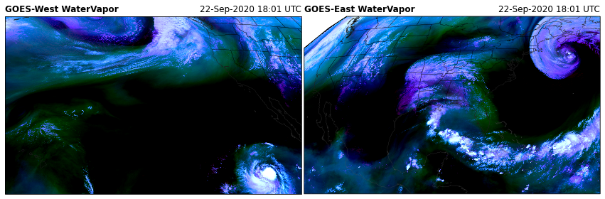
- get_latlon()¶
Get lat/lon of all points
- property x¶
x sweep in crs units (m); x * sat_height
- property y¶
x sweep in crs units (m); x * sat_height